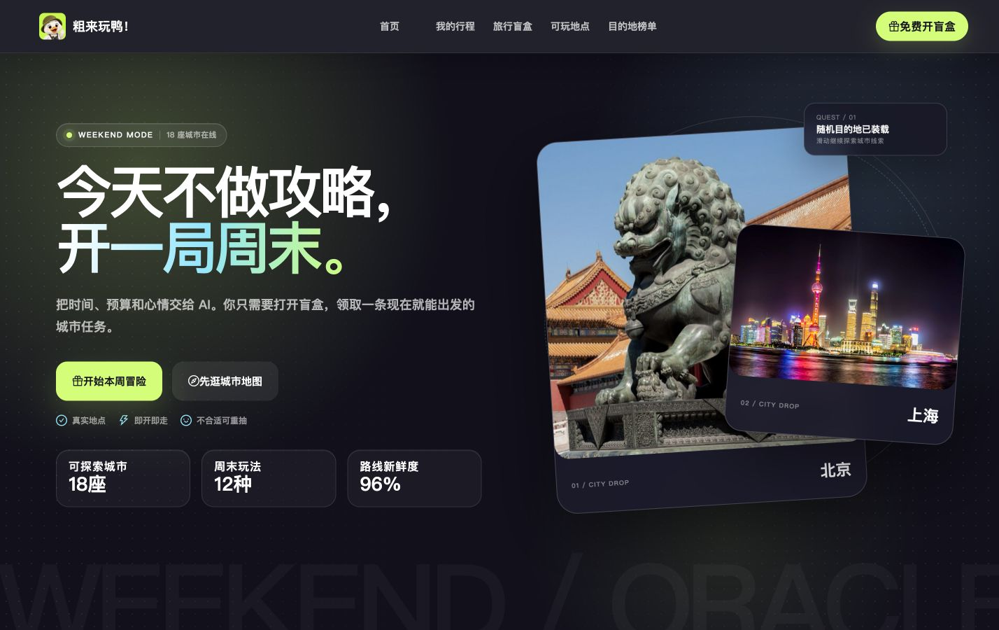
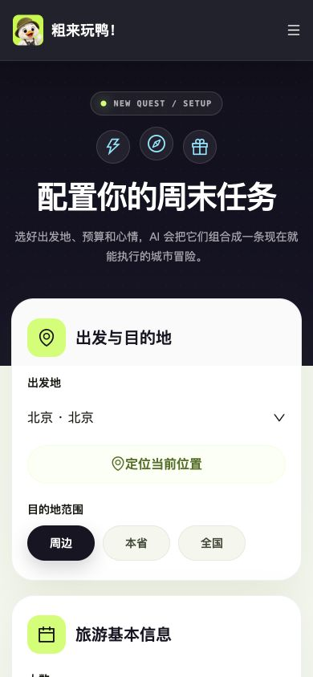

传统旅行产品
100
个“你也许会喜欢”
搜索 → 筛选 → 比较 → 犹豫 → 放弃
THE REAL PROBLEM
收藏越多，决策成本越高。周末只有两天，用户需要的不是更长的列表，而是更短的行动路径。
搜索 → 筛选 → 比较 → 犹豫 → 放弃
输入状态 → AI 收敛 → 开盒 → 出发
NORTH-STAR EXPERIENCE
城市 / 时间 / 预算 / 心情
约束过滤 + 召回 + 解释
用仪式感呈现唯一答案
收藏、行程、完成与反馈
A FALSIFIABLE BET
不是赌用户喜欢盲盒
而是验证 AI 能否收敛决策
THE DECISION CLOCK
打开产品，不先做攻略
时间、预算、心情
一个地点 + 推荐理由
从“想去”变成约定
ONE LINK · TWO EXPERIENCES


DESIGNING ANTICIPATION
DECISION PIPELINE
位置 · 时长 · 预算 · 心情
营业 / 距离 / 预算 / 时长
MySQL 数据 + 标签匹配
为什么是它，而不是其他
地点 · 路线 · 预算 · 理由
TRUST IS A FEATURE
FROM PROTOTYPE TO SERVICE
2 vCPU / 2 GB 资源约束下，优先保证核心链路稳定。
SCALE WITHOUT LOSING LOCALITY
统一字段保证可计算，本地标签保留城市差异；真实图片、地标与玩法共同形成“城市感”。
MVP IS A CHOICE
先证明用户愿意把决定交给 AI 再讨论如何把用户留得更久
HOW I WOULD PROVE IT
按城市 × 预算 × 时长建立人工标注集，评估可执行率、约束命中率与理由一致性。
QUALITY配置完成 → 开盒 → 加入行程 → 实际完成，找到真正影响行动的断点。
FUNNEL对比“直接列表”与“单结果盲盒”，观察决策时长、重抽率和加入行程率。
EXPERIMENT跟踪 LLM 成本、P95 响应、降级比例，让 AI 价值与工程成本一起可见。
OPS当前没有真实用户规模数据；以上为上线后的验证设计，不把目标数字包装成结果。
AI PRODUCT MANAGER
从用户问题到产品边界，从 AI 可控性到上线成本，完整走过一次 0→1。
把“旅游推荐”收敛为“周末即时决策”
PRD 信息架构 主闭环 游戏化体验
约束 召回 生成 降级与评估框架
跨端体验 接口数据 部署与问题修复